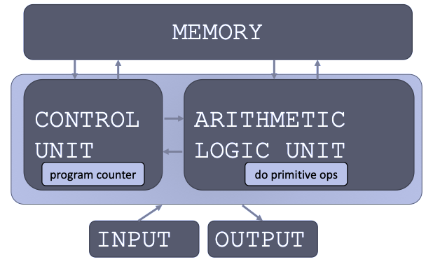

EE1021 Programming for Engineers · Lecture 1 · Fall 2026–2027
print(), and input()Instructor
b.erdogan@iku.edu.trLab Assistant
ahmet.ayranci@iku.edu.trWe will learn to program in Python to solve real-world engineering problems. No prior experience is required, but steady practice matters.
1 Before class
Skim the slides and bring one question.
2 In the lab
Write, run, and explain your own code.
3 After class
Redo one example without looking at the solution.
4 When stuck
Ask early in class, lab, office hours, or by e-mail.
Lecture — Wednesday 09:00–10:50, 4C-0406
Lab — Thursday, B2 Electrical Lab
Weekly rhythm: the Wednesday lecture introduces the topic; the Thursday lab practises it. The first lab is in week 2.
01 Course and Python basics 16 Sep
Variables, numbers, strings, input and output. No lab this week.
02 Control flow 23 Sep
if / else, for and while. Lab 1: strings, if-else and loops
03 Functions and modules 30 Sep
Built-in functions, your own functions, scope. Lab 2 + Quiz 1
04 Data structures 7 Oct
Strings, tuples, lists, dictionaries and sets. Lab 3 + Quiz 2
05 Debugging, errors and exceptions 14 Oct
Reading error messages, try / except. Lab 4 + Quiz 3
06 Object-oriented programming I 21 Oct
Classes, objects and methods. Lab 5 and midterm practice; project topics announced
Second half: object-oriented programming, then data, files and numerical computing, ending with the project presentations.
07 No class 28–29 Oct
Cumhuriyet Bayramı. Make-up days: 7–8 December (MATLAB basics)
08 Midterm exam 4 Nov
Written exam in the lecture hour, weeks 1–6. Lab: solutions and review
09 Object-oriented programming II 11 Nov
Inheritance and applications. Lab 6; project groups registered
10 Data and visualisation 18 Nov
NumPy arrays and matplotlib plots. Lab 7 + Quiz 4
11 File input/output and CSV 25 Nov
Reading and writing data files. Lab 8 + Quiz 5
12 Numerical computing and review 2 Dec
Lab: project presentations and submission. Final exam: 9–22 December
20% Lab quizzes
Five short written quizzes in the lab, weeks 3, 4, 5, 10 and 11; the average counts
25% Midterm
Written exam in week 8 (4 November): trace and explain code
35% Final
Written exam, 9–22 December, covering the whole course
20% Project
Group project (3 students): working program, short report and presentation in week 12
Practice homework is not graded. Missed lab quizzes have no make-up. Letter grades: relative evaluation in Orion; at least 20/100 in the final exam is required to pass. Attendance: at least 80%, and no more than two missed lab sessions.
1 Install Python 3
python.org/downloads — tick “Add python.exe to PATH”
2 Install VS Code + Python extension
code.visualstudio.com, then the Python extension by Microsoft
3 Open a folder and run
Create hello.py, press the Run button, read the output in the terminal.
name = input("Your name: ")
print("Hello", name)PS C:\Work\1234567> python hello.py
Your name: Ada
Hello Ada
Course demonstrations and worksheets use VS Code: write code in the editor, press Run, read the output in the TERMINAL panel, and check the interpreter name in the Status Bar.
Type this program in VS Code, predict the output, and run it.
Do not worry about every term yet. The goal is to complete the full cycle: type → predict → run → inspect → explain.
Interactive prompt — type in the VS Code terminal after python
The prompt answers every expression you type. Good for trying one line.
Slides marked with >>> are prompt examples; everything else is written as a script. Text after # is a comment: Python ignores it.
Fundamentally, a computer:
× Performs calculations
Billions of operations per second
▣ Remembers results
Values in memory while the program runs; files on disk afterwards
What kinds of calculations?
We write recipes to make the computer perform tasks.
The square root of a number x is y such that y*y = x.
Recipe for approximating the square root of x = 16:
g.abs(g*g - x) < 0.001, stop and use g as the approximation.g and x/g.You will write this recipe as a while loop in week 2; today we only read it.
Guess g |
g × g |
x / g |
New guess (g + x/g) / 2 |
|---|---|---|---|
| 3 | 9 | 5.333 | 4.167 |
| 4.167 | 17.361 | 3.840 | 4.003 |
| 4.003 | 16.024 | 3.997 | 4.000 |
1 Sequence
Simple steps in a useful order
2 Flow of control
Rules for deciding when a step runs
3 Stopping condition
A clear condition for finishing
Sequence + flow of control + stopping condition = algorithm.

print().2 + 3 to produce values. Test: if you can write x = in front of it, it is an expression.>>>); save longer programs in a .py file and run the file.# is a comment for the reader; the interpreter skips it.int, float, boolstrThe equal sign assigns a value to a variable name.
Try it — predict before running: at the prompt, what does >>> pi_approx display? What does print(pi_approx) show in a script?
Check: both show approximately 3.142857; a bare pi_approx in a script shows nothing.
Watch for: = binds a value to a name; == compares two values.
2.2 is no longer reachable through radius.Try it — predict: after the last line, what is area?
Check: still 15.1976. area was computed once; it does not follow radius. Re-run the formula to update it.
pi→3.14
radius→3.2
area→15.1976
2.2 is no longer bound to a name; area keeps its earlier result.
int and float| Expression | Meaning |
|---|---|
x + y |
addition |
x - y |
subtraction |
x * y |
multiplication |
x / y |
division |
x % y |
remainder, e.g. 5 % 2 -> 1 |
x ** y |
x to the power of y |
x // y |
floor division, e.g. 5 // 2 -> 2 |
Try it — predict before running: at the prompt, >>> 17 // 5 and >>> 17 % 5.
Check: 3 and 2.
Watch for: / performs ordinary division and returns a float.
Variable names
_-speed and Speed differ| Operator | Meaning |
|---|---|
x < y |
less than |
x > y |
greater than |
x <= y |
less than or equal |
x >= y |
greater than or equal |
x == y |
equal |
x != y |
not equal |
Every comparison produces a bool: True or False.
Try it — predict: 3 >= 3.0 and "5" == 5
Check: True and False — a string is never equal to a number.
For Lecture 1, assume x and y are Boolean values.
| Operator | Description |
|---|---|
x and y |
True only if both are True. |
x or y |
True if at least one is True. |
not x |
Reverses True and False. |
| Operator | Meaning | Example |
|---|---|---|
= |
assignment | x = 5 |
+= |
add and assign | x += 3 means x = x + 3 |
-= |
subtract and assign | x -= 2 means x = x - 2 |
*= |
multiply and assign | x *= 2 means x = x * 2 |
The same update pattern also works with /=, //=, %=, and **=.
Compute and update
Before the update, full_steps is 3 and remainder is 2. After the update, full_steps is 4.
hi = "hello there"
name = "ana"
greet = hi + name
greeting = hi + " " + name
repeated = (name + " ") * 3
has_a = "a" in nameTry it — predict before running: print(greet) and print(has_a)
Check: hello thereana (no space is added for you) and True.
Square brackets perform indexing into a string.
Use [start:stop:step] to slice strings.
[start:stop], then step = 1 by default.Display a result with print()
Convert numeric input before calculating:
Try it — predict before running: if the user types 7, what does print(5 * text) display?
Check: 77777.
Watch for: input() returns a string; use int() or float() when you need a number.
Answer without running Python first. Then check your answers in VS Code.
7 // 2 produce? And 7 / 2?unit = "volt", what do unit[-1], unit[1:3], and unit * 2 produce?x = 5, x += 2, x *= 3, what is x? Which line would fail if x had been read with input() and not converted?Check: 3 (int) and 3.5 (float); "t", "ol", "voltvolt"; 21 — x += 2 fails because input() returns a string.
print() displays output; input() receives text from the user.